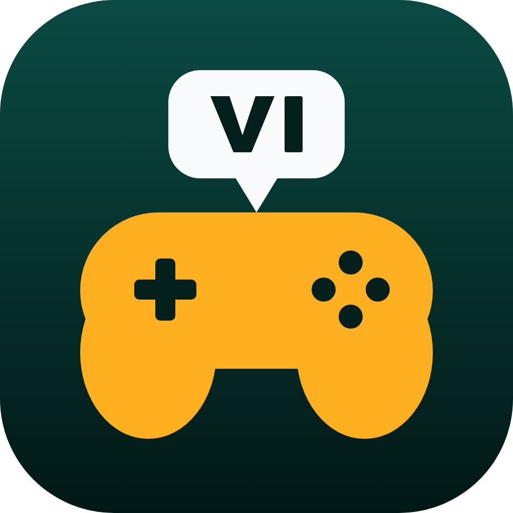

VietGameVietGame
VietGame là ứng dụng (Windows và Android) giúp người chơi Việt Nam chơi game nước ngoài dễ hơn: ứng dụng đọc phụ đề tiếng Anh trên hình game PS5 (qua Remote Play), dịch sang tiếng Việt, rồi hiện phụ đề và đọc thuyết minh tiếng Việt trên TV (LG, Samsung, Android TV / Google TV) hoặc ngay trên máy.
Hiện đè lên hình game trên TV hoặc máy tính, điện thoại.
Giọng đọc tiếng Việt cho lời thoại, chỉnh âm lượng riêng.
Phụ đề và thuyết minh làm sẵn theo từng game, dành cho người ủng hộ dự án.
Đăng nhập bằng Google
Tài khoản (đăng nhập bằng Google hoặc email) chỉ dùng để ghi nhận các gói VIP người dùng đã ủng hộ và cho phép tải gói đó trên tối đa 3 thiết bị. Xem chi tiết trong Chính sách quyền riêng tư.
English
VietGame is a Windows and Android app that reads English subtitles from PS5 games (via Remote Play), translates them into Vietnamese, and shows Vietnamese subtitles and voice-over on a TV (LG, Samsung, Android TV / Google TV) or on the same device. Signing in with Google is used only to identify the user's account so that supported game packs ("VIP packs") can be unlocked and downloaded on up to 3 devices. See our Privacy Policy.